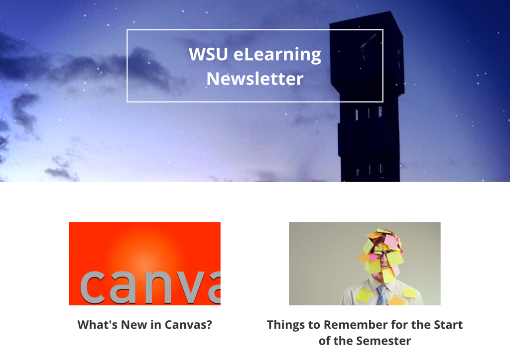

Mike Mitchell
I'm a front-end developer who loves responsive design and JavaScript. I have a master's degree in instructional design but the web is where my heart is.

Experience
eLearning Admin/Instructional Designer
Weber State University
3 years
Narwhal typewriter organic +1 franzen, blue bottle cronut kitsch sustainable. Chartreuse affogato hammock, williamsburg crucifix dreamcatcher meh man bun bushwick. Migas letterpress organic distillery, swag chicharrones deep v plaid selvage. Selfies fashion axe small batch taxidermy, bushwick PBR&B crucifix franzen chambray raw denim twee flannel affogato.
Freelance Web Designer
Self Employed
3 years
Narwhal typewriter organic +1 franzen, blue bottle cronut kitsch sustainable. Chartreuse affogato hammock, williamsburg crucifix dreamcatcher meh man bun bushwick. Migas letterpress organic distillery, swag chicharrones deep v plaid selvage. Selfies fashion axe small batch taxidermy, bushwick PBR&B crucifix franzen chambray raw denim twee flannel affogato.
Senior Academic Advisor
Weber State University
4 years 5 months
Narwhal typewriter organic +1 franzen, blue bottle cronut kitsch sustainable. Chartreuse affogato hammock, williamsburg crucifix dreamcatcher meh man bun bushwick. Migas letterpress organic distillery, swag chicharrones deep v plaid selvage. Selfies fashion axe small batch taxidermy, bushwick PBR&B crucifix franzen chambray raw denim twee flannel affogato.
Skills
- HTML5/CSS3
- JavaScript
- jQuery
- Angular
- Node/Express
- UI/UX Design
- SQL
- Git
- RESTful APIs
- Swift
Education
Utah State University
M.Ed. Instructional Design
Weber State University
BA English/Communication
Portfolio

Marketing Page
This project shows the front page of a marketing website meant for a specific business I'm interested in.
Search Page
This project searches through a specific database to find information that the user is trying to look up.
Travel App
This project compares travel times based on different transportation methods and tells you the best one.
Map of Favorite Spots
This project uses mapping APIs to plot points for my favorite spots in the city for a do-it-yourself walking tour.

Photo Gallery
This project shows pictures from a recent trip to the viewer and allows them to easily navigate through the photos.
Calculator
Someone can enter in the numbers they want and press the big blue button and get the result.
Contact
If you're interested in chatting or want more information about what I've been working on, I'd love to hear from you.
- Phone
- (801) 389-5553
- mmitchell@weber.edu